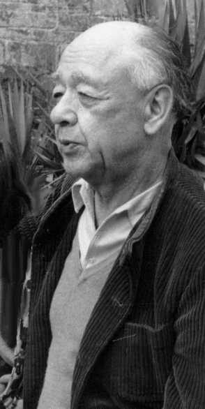
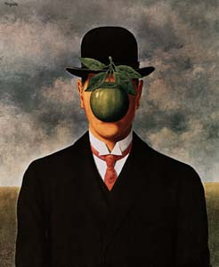
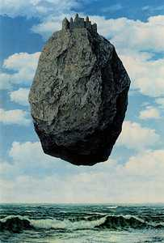

Eugen
Ionescu naît le 26 novembre 1909 (le 13 selon le calendrier orthodoxe)
à Slatina (Roumanie) située à 150 km de Bucarest.
De nombreuses sources situent sa naissance en 1912. L'erreur est due à
une "coquetterie" de l'auteur. Celui-ci a confié a Emmanuel Jacquart
(peut-être le biographe le mieux documenté d'Ionesco et à
qui je dois bon nombre d'informations dans cette page) s'être rajeuni
de trois années après avoir lu une déclaration du
critique Jacques Lemarchand qui, à l'aube des années 50,
saluait l'avènement d'une nouvelle génération de jeunes
auteurs, parmi lesquels figuraient Ionesco et Beckett!
Son père, juriste
roumain, s'appelait également Eugen Ionescu. Sa mère était
française et s'appelait Thérèse Ipcar. Peu de temps
après la naissance d'Eugène, la famille s'installe à
Paris, où le père poursuit ses études et devient par
la suite docteur de la Faculté de Droit de Paris.
Naissance de la petite soeur
d'Eugène le 11 février 1911 (un an plus tard naît un
petit frère, Mircea qui meurt à l'âge de 18 mois suite
à une méningite). En 1914, il habite Square Vaugirard. A
l'âge de quatre ans, il est déjà grand amateur de Guignol.
Son père retourne
à Bucarest en 1916, au moment où la Roumanie entre en guerre.
Mais sa femme et les petits enfants restent à Paris et doivent se
débrouiller seuls, mais toutefois avec le soutien des grands-parents
maternels des enfants. Après la fin de la Grande Guerre, on n'a
toujours pas de nouvelles du père, et on le croit mort au combat.
A la fin de la guerre, la
mère et ses enfants habitent l'hôtel du Nivernais, rue Blomet
(au 4e, puis au 6e étage) dans le 15e arrondissement. La santé
d'Eugène étant fragile, sa mère le met en pension
à la campagne, à La Chapelle Anthenaise (Mayenne), où
il reste de 1917 à 1919 avec sa petite soeur, Marilina. Dans les
écrits de Ionesco, cette période fut la période la
plus paisible et harmonieuse de sa vie.
Sa soeur et lui retournent
à Paris et habitent maintenant un appartement exigu, sombre et humide
rue de l'Avre, Paris XVe, avec la mère et les grands-parents. Il
y écrit une pièce "héroïque" en deux actes (32
pages d'un cahier d'écolier) et un scénario comique. Ces
textes sont malheureusement perdus. Il fréquente l'école
de la rue Dupleix
En fin de compte, son père
n'était pas mort au front. Il n'avait même pas du tout été
soldat, mais avait obtenu un poste d'inspecteur de la sûreté
à la police de Bucarest. En 1917, il se remarie et la même
année il devient inspecteur général. Il s'était
toujours débrouillé pour être du côté
du pouvoir changeant (Averesco, Codrianu, la garde de fer, les nazi, les
communistes) parce qu'il pensait que le pouvoir a toujours raison. Usant
et abusant de sa position dans la police et prétextant que sa femme
s'était installée à l'étranger, il avait obtenu
le divorce, et même la garde des enfants. Il s'était ensuite
remarié et exigeait maintenant que les enfants lui soient remis.
Eugène retourne donc,
en mai 1922, en Roumanie avec sa soeur. Il apprend le roumain et fréquente
le collège Sfântul Sava (Saint-Sava) de Bucarest et passe
ensuite le baccalauréat au lycée de Craiova en 1928.
Les relations avec la famille
du père n'était pas bonne. Surtout pas avec la belle-mère
qui n'aimait pas les enfants et avait fini par chasser la soeur d'Eugène
qui est retournée vivre avec sa mère, qui s'était
installée à Bucarest. Son père, qui était pourtant
riche, n'a jamais accepté de payer de pension alimentaire pour elle.
En 1926, Eugène quitte
la maison paternelle après une dispute violente et retourne également
vivre avec sa mère, qui travaille maintenant comme employée
de banque à Bucarest. Lorsque Marilina abandonne le lycée,
sa mère la fait engager comme dactylo à la banque. Marilina
passera tout le reste de sa vie en Roumanie. Elle se marie deux fois et
n'a pas d'enfants. Elle n'entretient très peu de contacts avec Eugène
après son retour en France en 1938.
Eugène a une chambre
meublée chez la soeur de son père. Celui-ci lui donne de
l'argent de temps en temps et use de ses relations pour lui faire attribuer
une bourse d'études. Il insiste pour que son fils soit ingénieur,
mais Eugène s'intéresse plus à la littérature
et à la poésie.
En 1928, il débute
comme poète dans Bilete de papagal (Billets de perroquet), revue
quotidienne, fameuse par son format minuscule et prépare, de 1929
à 1933, une licence de français à l'Université
de Bucarest. Il écrit son premier article (sur Ilarie Voronca) dans
la revue Zodiac en 1930. Il fait connaissance de Rodica Burileanu, étudiante
en philosophie et en droit.
En 1931, il écrit
Elegii pentru fiinte mici (Elégies pour des êtres minuscules),
plaquette de vers, influencés par Francis Jammes.
Entre 1928 et 1935, il écrit
des articles dans les revues Vremea (Le Temps), Azi (Aujourd'hui), Floarea
de Foc (La Fleur de Feu), Viata Literara (La Vie Littéraire), România
Literara (La Roumanie Littéraire), l'hebdomadaire anti-fasciste
Critica, Axa (l'Axe), Fapta (Le Fait), Ideea, Româneasca et Zodiac.
1933 Collaboration à
Facla (Le Flambeau) et à l'Universul Literar (L'Univers littéraire).
1934 Nu (Non), (articles
et de pages de journal). Ce recueil d'essais critiques contestataires provoque
un énorme scandale dans le monde littéraire roumain, par
son action destructrice, subversive, menée avec beaucoup de verve
et de sarcasme, contre les valeurs consacrées de la littérature
roumaine: Tudor Arghezi, Ion Barbu, Camil Petrescu, Mircea Eliade. Le volume
reçoit un prix des éditions des Fondations royales, accordé
par un jury présidé par le critique et théoricien
de la littérature Tudor Vianu.
Le 8 juillet 1936: Mariage
avec Rodica Burileanu. Voyage de noces à Constanza et en Grèce.
Trois mois plus tard, sa mère meurt d'une congestion cérébrale.
Eugène travaille maintenant comme professeur de français
à Cernavoda. Il professe au séminaire orthodoxe de Curtea
de Arges, puis au séminaire central de Bucarest. Il est détaché
au Ministère de l'Education nationale où il dirige le service
des relations avec l'étranger.
De 1937 à 1938, il
assure la rubrique critique de la revue Facla. Ecrit aussi dans Universul
Literar, le quotidien culturel Rampa (La Rampe), Parerile Libere (Opinions
libres).
A propos de son père:
"la dernière fois que je l'ai vu, j'avais terminé mes études...
j'étais marié... Il respectait l'Etat, je détestais
l'Etat. Il m'avait traité d'enjuivé - il vaut mieux être
enjuivé que con!"
Son article "Le vocabulaire
de la critique", paraît dans Vremea en 1938. La même année,
il obtient une bourse du gouvernement roumain pour préparer à
Paris une thèse (jamais terminée) sur : Le thème du
péché et le thème de la mort dans la poésie
française depuis Baudelaire. A Paris, il s'intéresse aux
écrits d'Emmanuel Mounier, Berdiaev, Jacques Maritain, Gabriel Marcel.
1939 Il rencontre Henri
Thomas et le groupe de la revue Esprit. Voyage à Marseille (rapports
avec les Cahiers du Sud et Léon-Gabriel Gros). Envoie de Paris des
correspondances à la prestigieuse revue mensuelle littéraire
et scientifique Viata Româneasca (La Vie roumaine). Retourne en visite
à la Chapelle-Anthenaise.
A la déclaration,
la même année, de la 2e Guerre mondiale, il retourne en Roumanie.
Il travaille comme professeur de français au lycée Sfântul
Sava de Bucarest. Vu la situation en Roumanie, qui était pourtant
vaincue et occupée, il regrette amèrement d'avoir quitté
la France et après de nombreuses tentatives échouées,
il retourne finalement, en mai 1942, en France avec sa femme, grâce
à des amis qui l'aident à se procurer des papiers. Ils habitent
d'abord à l'Hôtel de la Poste à Marseille. Grandes
difficultés financières. Il traduit et préface le
roman Urcan Batrânul (le Père Urcan) de Pavel Dan (1907-1937).
Eugène Ionesco est nommé aux services culturels de la Légation
royale de Roumanie à Vichy. Il finira attaché culturel. Sa
fille Marie-France naît le 26 août 1944.
En mars 1945, ils s'installent
38, rue Claude-Terrasse, Paris 16e (où ils résideront jusqu'en
1960). La vie était difficile et le travail précaire en cette
période. Il travaille comme correcteur dans une maison d'éditions
administratives. De 1945 à 1949, il traduit les oeuvres de Urmoz
(1883-1923), poète roumain, précurseur du surréalisme,
de la littérature de l'absurde et de l'anti-prose. La famille Ionesco
reçoit, pendant cette période, un secours financier d'une
parente.
Son père meurt en
octobre/novembre 1948 (12 ans après sa mère).
Il commence, en 1948, à
écrire la pièce qui sera intitulée La Cantatrice Chauve,
et qui sera représentée pour la première fois au Théâtre
des Noctambules, le 11 mai 1950, dans la mise en scène de Nicolas
Bataille. Ce fut loin d'être un succès. Seuls une poignée
d'intellectuels l'appréciaient et l'appuyaient. Ionesco fréquente
Breton, Buñuel, Adamov et Mircea Eliade. Il se fait naturaliser
français.
Le 4 août 1950, Ionesco
joue le rôle de Stepan Trofimovitch dans Les Possédés
de Dostoïevski, mis en scène de Nicolas Bataille. Il adhère,
par goût de la drôlerie, de l'aventure et du nihilisme, au
Collège de Pataphysique (avec Boris Vian, Raymond Queneau, Jacques
Prévert, Marcel Duchamp et Michel Leiris). Grand nombre de ses oeuvres
seront publiées dans les Cahiers du Collège de Pataphysique.
1958 fut l'année
de la "Controverse londonienne" où Ionesco défend son théâtre
et sa vision du théâtre dans une virulente polémique
avec le critique anglais, Kenneth Tynan du Observer.
En 1959, il participe aux
entretiens d'Helsinki sur le théâtre d'avant-garde. La même
année, il reçoit le prix de la critique au Festival de Tours.
De 1960 à 1964, les
Ionesco résident 14, rue de Rivoli, Paris 1er.
Il est consacré Chevalier
des Arts et Lettres en 1961 et reçoit en 1963 le Grand Prix Italia
pour la version ballet de La Leçon.
1965 Voyage à bord
du France, au cours duquel est représenté Délire à
deux, mis en scène par Nicolas Bataille.
1966 Conférence-spectacle
au Théâtre de France, au cours de laquelle Maria Casarès,
Jean-Louis Barrault et Ionesco lisent des textes inédits. La même
année, il reçoit le Grand Prix du Théâtre de
la Société des Auteurs pour toute son oeuvre.
Le 8 mai 1969, il reçoit
le Prix littéraire prince Pierre de Monaco et la médaille
de Monaco, et en décembre le Grand Prix national du théâtre.
1970, 22 jan. Election à
l'Académie française, au fauteuil de Jean Paulhan. et devient
Chevalier de la Légion d'Honneur. Il reçoit également
le Grand Prix autrichien de la littérature européenne.
1971, 25 fév. Réception
à l'Académie française. Discours de réception
d'Eugène Ionesco et réponse de Jean Delay.
Ionesco prononce le discours
d'ouverture du festival de Salzbourg en 1972.
Le 30 avril 1973, il reçoit
le prix de Jérusalem pour l'ensemble de son oeuvre et notamment
"Rhinocéros", et, en juin, la médaille de la ville de Vichy.
En 1974, il devient docteur
honoris causa de l'Université de Warwick (UK) et en mars 1975 de
l'Université de Tel-Aviv.
Il reçoit la médaille
Max Reinhardt en août 1976 lors de la célébration du
50e anniversaire du festival de Salzbourg. En novembre il assiste, avec
Tom Bishop, Emmanuel Jacquart, Françoise Koutilsky et Rosette Lamont,
à une table ronde à l'Université de New York, devant
900 personnes.
Décade Ionesco à
Cerisy-la-Salle du 3 au 13 août 1978 que le dramaturge honorera de
sa présence pendant quelques jours. Colloque organisé par
Marie-France Ionesco et Paul Vernois. Pendant une dizaine de jours, un
grand nombre de spécialistes de Ionesco se sont retrouvés
dans un château en Normandie (Claude Abastado, Roger Bensky, Mircea
Eliade, Martin Esslin, Henri Gouhier, Jeanyves Guérin, Gelu Ionesco,
Emmanuel Jacquart, Pierre Larthomas, Michel Lioure, Yves Moraud, Jean Onimus,
Michel Pruner, Paul Vernois, Colette Weil). Les communications furent publiés
sous le titre Ionesco: Situation et perspectives. L'auteur de ce site internet
y assista également sur invitation personnelle d'Eugène Ionesco.
En janvier/février
1982, Ionesco donne une conférence à l'Université
de Bonn où il reçoit les insignes de l'ordre du Mérite
allemand.
Le 15 décembre 1982:
représentation de Freshwater au Centre Georges-Pompidou, pour fêter
le centenaire de la naissance de Virginia Woolf. Adaptation et mise en
scène de Simone Benmussa, avec la distribution suivante: Jean-Paul
Aron, Florence Delay, Guy Dumur, Viviane Forrester, Eugène et Rodica
Ionesco, Alain Jouffroy. La pièce sera reprise plusieurs fois: les
20 et 21 oct. 1983 à la New York University (où s'ajoutent
à la distribution: Erika Kralik, Joyce Mansour, Alain Robbe-Grillet,
Nathalie Sarraute, S. Wilson), le 7 nov. 1983 au Théâtre du
Rond-Point, les 26 et 27 nov. 1983 à Londres, au Riverside, et les
4-5 juillet 1984 au festival de Spoleto.
Les 21-23 avril 1983, à
la septième réunion de l'Académie américano-roumaine
des Arts et des Sciences, à Davis, en Californie, présidée
par Richard Coe, Ionesco est l'invité d'honneur. Participent également
Martin Esslin et Emmanuel Jacquart.
La santé d'Eugène
Ionesco reste fragile. En février 1984 il est hospitalisé
et reste dans un coma diabétique pendant deux jours. Il effectue
cependant, plus tard la même année, des voyages et donne des
conférences dans plusieurs pays d'Europe et aux Etats-Unis. Il devient
Officier de la Légion d'Honneur.
Le 16 avril 1985, Ionesco
reçoit deux médailles, celle de la Mayenne et celle de la
Flèche, sous-préfecture de la Sarthe. En mai, il reçoit
le prix International d'Art contemporain de Monte-Carlo. Il est membre
du jury de la Biennale du film à Venise.
En 1986, il reçoit
le prix T. S. Elliot-Ingersoll pour une écriture créative
à Chicago, en présence de Saul Bellow et Mircea Eliade. Il
se rend ensuite à Berne où il participe activement à
une réunion en faveur des droits de l'homme. En juillet, il peint
à Saint-Gall, en Suisse. Il y retourne pour peindre en février
1987.
Le 23 février 1987,
le Théâtre de la Huchette fête le trentième anniversaire
du Spectacle Ionesco, en présence d'Eugène et Rodica Ionesco
ainsi que des comédiens qui, au fil des ans, se sont relayés
pour jouer La Cantatrice Chauve et La Leçon. En mars, il reçoit
la médaille de la ville de Paris et en octobre deux médailles
d'or: celle de Saint-Etienne et celle de Saint-Chamond.
En février 1989,
Eugène Ionesco est de nouveau hospitalisé, ce qui l'empêche
d'intervenir en personne pour défendre les droits de l'homme en
Roumanie. Sa fille lit son réquisitoire contre le régime
roumain à sa place. Début mars, 710 écrivains, dont
Ionesco et Beckett, signent une déclaration pour soutenir le droit
de tous à s'exprimer. Le 7 mai, Eugène Ionesco et Jacques
Mauclair reçoivent chacun un Molière. Le 30 décembre,
Ionesco et Cioran deviennent membres d'honneur de l'Union des écrivains.
Le 27 nov. 1992, l'Université
de Silésie, Uniwersytet Slaski, Katowice, Pologne, décerne
à Eugène Ionesco le titre de docteur honoris causa. La cérémonie
a lieu à Paris.
Ionesco était membre
du C.I.E.L. (Comité des intellectuels pour l'Europe des libertés)
qui milite pour l'application des Droits de l'homme dans tous les pays
et pour la liberté des savants, écrivains et artistes.
Eugène Ionesco meurt
le 28 mars 1994 à son domicile à Paris. Il est enterré
au Cimetière de Montparnasse.
... mais son oeuvre est
toujours là.